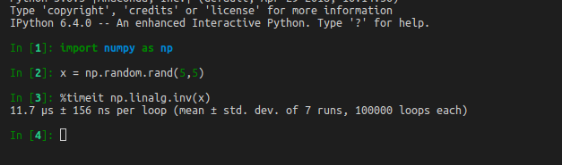
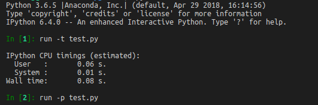
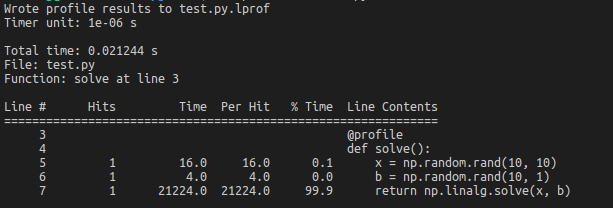

Profiling Python
Timeit
You can use timeit in IPython to time the statement.

Profiler
Say you have following python code:
import numpy as np
def solve():
x = np.random.rand(10, 10)
b = np.random.rand(10, 1)
return np.linalg.solve(x, b)
if __name__ == '__main__':
solve()
You can time the script using following code in ipython:

You can also use python -m cProfile test.py to profile.
Line-profiler
- Use
pip install line_profilerto install - add
@profileto decorate your function - Use
kernprof -l -v test.pyto profile
import numpy as np
@profile
def solve():
x = np.random.rand(10, 10)
b = np.random.rand(10, 1)
return np.linalg.solve(x, b)
if __name__ == '__main__':
solve()
